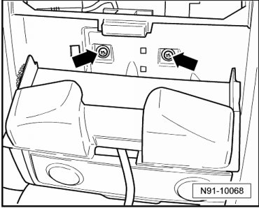
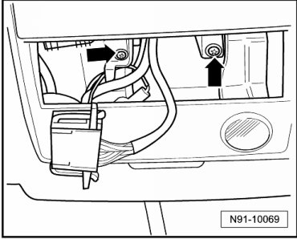
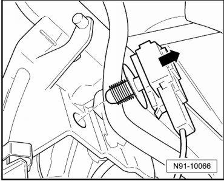
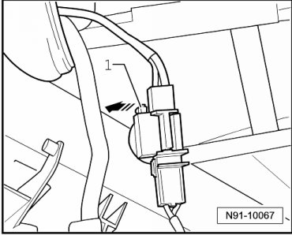
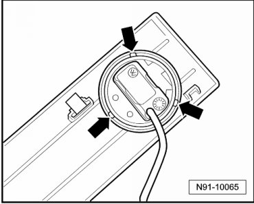

Voice Activation Microphone: Service and Repair
Telephone Microphone
Removing
Microphone for hands-free use of telephone system is installed in front interior light.
- Open glasses compartment in roof console.
- Remove bolts - arrows -.

- Remove interior lights.
- Remove bolts - arrows -.

- Remove complete interior light unit from headliner.
- Unclip connector - in direction of arrow - from interior light frame.

- Release microphone connector by press locking mechanism - 1 - in direction of arrow and then removing connector.

- Press three catches - arrows - and remove microphone.

Installing
Install in reverse order of removal.